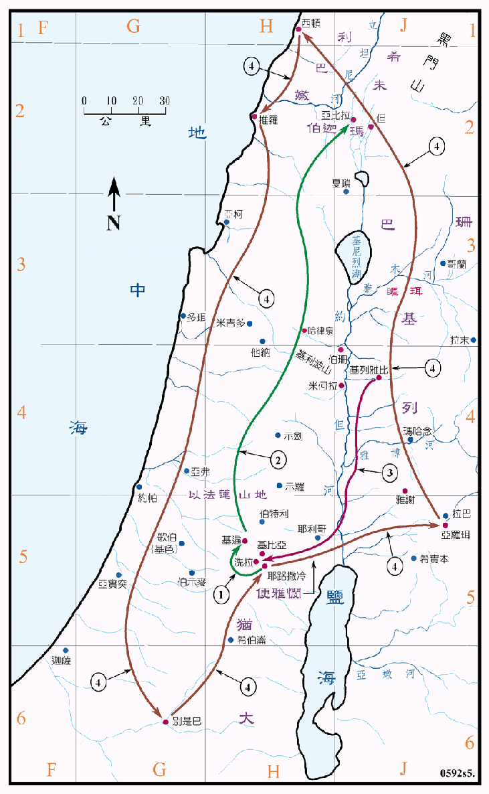

行动线说明
| 序号 | 圣经 | 说明 |
|---|---|---|
| 1 | 撒下20:4-10 | 示巴叛变，大卫令亚玛撒去招聚以色列人，但误了期限，约押领人到基遍杀了他。 |
| 2 | 撒下20:14-23 | 约押追示巴，走遍以色列各支派，到了亚比拉，示巴在亚比拉被一个妇人所杀。 |
| 3 | 撒下21:12 | 大卫从基列雅比城，将扫罗和约拿单的骸骨运回，葬在洗拉。 |
| 4 | 撒下24:2-9 | 大卫令约押走遍全地去数点以色列人。 |
约押奉命去数点以色列人，曾到了西顿和推罗，这是腓尼基之城，按前后之记载，大卫并未攻打腓尼基，而一直是与他们和好，所以腓尼基并不是以色列人的属国，此处所说，可能是数点侨居在这两个城中的以色列人。